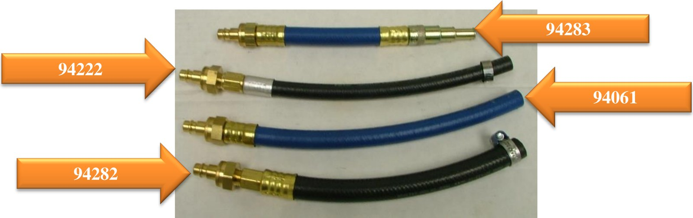

Doc no. MOC-TSB-13-33 // Vol. 13 No. 33 // Nov 26, 2013 // Cooling
Additional Adapters added to the Coolant Machines and Standard Adapter Kit
9428494111
Due to the increased usage of the Reserve Coolant Tank Adapter Kit (Part No. 94284), and to meet the continuing needs of our customers, the MOC Machine and Equipment Department has updated the Standard Coolant Adapter Kit (Part No. 94111) by adding the adapters below.
What's new
These adapters are also available separately:
Contact
For more information, contact the Machine & Equipment Department at 866.244.6621.

Part numbers
| Part No. | Description | Notes |
|---|---|---|
| 94283 | Universal Step Down Adapter | |
| 94222 | 5/16" Open Hose Adapter | |
| 94061 | 3/8" Open Hose Adapter | |
| 94282 | 1/2" Open Hose Adapter | |
| 72041 | Small Hose Clamp | |
| 94284 | 94283 94222 94061 94282 Reserve Coolant Tank Adapter Kit | |
| 94111 | Standard Coolant Adapter Kit |